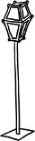

Gece çökünce ürkütür şehir. Ürkütür çünkü erkekleşir. Yürüdüğünüz sokak, hani her gün geçip gittiğiniz güzergâh, ansızın yabancılaşıverir; tanıdık bir sima bile huzursuz eder sizi eğer tek başına bir kadınsanız yolda yürüyen. Gece sokaklar tümden erkek, kaldırımlar gene de hâlâ kadındır. Bu yüzden yalnız başına geç saatte evine dönen bir kadın zikzaklar çizer çoğu zaman, bir kaldırımdan bir kaldırıma; karşıdan gelene, sokak ışıklarının dizilişine, karanlığın hallerine göre kendini ayarlayıp, korumaya alarak. Geceleri öyle derin fikirlere dalıp varoluş meselelerine, ya da en basitinden günün hayhuyuna filan kafa yorarak yürümek erkeklere mahsus bir ayrıcalıktır. Kadınlar o esnada anlamsız zikzaklar çizmek durumunda olduklarından, attıkları adımlara yoğunlaşmak zorundadırlar. Kafalarında tek bir gaye olabilir ancak, somut, net ve pratik: bir an önce eve dönmek.
Karanlıkta karşıdan gelen erkek, öyle "kötü" biri değil asla, diyelim ki pek bir aydın, açık fikirli, ya da diyelim ki aile babası, her daim terbiyeli yahut eşcinsel, gözü yok cins-i latifte... fark etmez. Geceleri karşıdan tek başına bir kadının geldiğini gören erkekler, şöyle örnek böyle iyi niyetli vatandaşlar dahi olsalar, varlıklarının haklı bir huzursuzluk sebebi olabileceğini akıllarının ucundan dahi geçirmez; asla, kat'a kaldırım değiştirmezler. Su yılanı gibi kayarak ilerlemek karanlıklarda, dişil bir maharet ve mecburiyettir.
Türkiye'de "feminist" kelimesinin iki temel karşılığı vardır gündelik yaşam lügatinde: "ha" ve "ha." Kelimeyi daha iyi tanımlayabilmek için bu iki karşılık birlikte kullanılır ekseriya. Feminist demek "ha-ha" demektir. Kelimenin yazılışı kadar telaffuzu da önemlidir. "Ha-ha" iki şekilde telaffuz edilir. Bir: üst dudak inceltilip, yana doğru çekilerek ağzın ön kısmından çıkartılır her iki hece. Doğru yapıldığı takdirde, hayli kudretli bir küçümseme efektidir. İki: dudaklar öne doğru uzatılıp, geniz boşluğundan dışarı atılır her iki hece. Doğru yapıldığı takdirde bariz bir tükürme efektidir. İki telaffuz biçimi arasındaki fark aynı zamanda sınıfsal bir farklılığa da işaret eder. Genellikle birinci şekilde telaffuz edenler üst sınıf, ikinci şekilde telaffuz edenler ise alt sınıftan gelirler. Bununla birlikte, alt üst şehirli evli sıçan deliği fark etmez, erkeklerin ezici, kadınların acıklı çoğunluğu aynı şekilde tanımlar Türkiye'de feminizmi: "HA-HA."
Sınıfsız, imtiyazsız bir toplum olamadık ama Ha-ha'lar söz konusu olduğunda kaynaşmış bir kütledir toplumumuz. Aynı espriye aynı edayla güleriz. Örneğin, son beş-on yıl içinde tek tük üniversitelerde kurulan Kadın Çalışmaları merkezleri, öğrenci, öğretim üyesi, idari görevli fark etmez kampüslerdeki erkeklerin ezici ve kadınların acıklı çoğunluğuna aynı espriyi yaptırdı defalarca: "Garı Gıpraşmaları Merkezi." Kantinlerde öğrencileri, odalarında "koca koca" profesörleri aynı espriye gülerken görebilirsiniz hâlâ.
Türkiye'de kadın hareketinin en büyük talihsizliği zaman içinde evrilen, bir kuşaktan bir kuşağa birikimini aktarabilen bir geleneğinin olmaması. Mevcut kazanımlar tabandan yeşeren mücadeleler sonucu edinilmekten ziyade, yukarıdan ihsan edildiği için Cumhuriyet tarihinde, feminist muhalefet kendi etiğini, dilini, geleneğini geliştirme şansını yakalayamadı. Feminizm, tıpkı Camembert ya da el değmeden dondurulmuş kalamar gibi lüks bir şey olarak algılandı. Karnı tok sırtı pek siyasi ufku dar kadınların lüksü.
Dün olduğu gibi bugün de, Türkiye'de ısrarla, bodoslama, dobra dobra feminist olmak ve de feminist kalmak için sürüsüne bereket sebep var. Bir tanesi bile yeter: Bu ülkede feminist olmak, feminist olmamaktan katbekat zor. Her zaman olduğu gibi bu mecrada da kolayı değil, zoru seçmekte fayda var. Ha eğer "ben bu ülkede kadınların, genç kızların konuşamadıkları kelimeleri, kendileri ve çocuklarıyla sularda boğduklarının, bekâret kontrollerinden sağ çıkmadıklarının, kendi evlerinde ensest, dayak ve tecavüz kurbanı olduklarının çoktan bilincindeyim, tüm bunları zaten biliyor ve önemsiyorum, feminist olmadan da kadından konuşmak mümkün" diyorsanız, mümkün mümkün olmasına da, mademki "femina" kısmıyla bir sorununuz yok, niçin bunca alerji her türlü "izm" takısına? Yoksa onlar da mı ha-ha?
Michigan